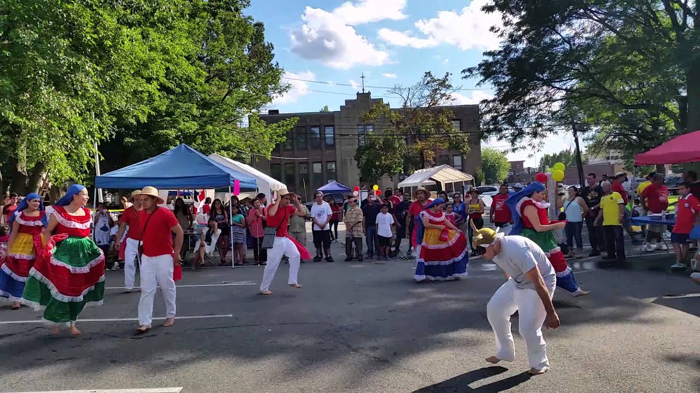
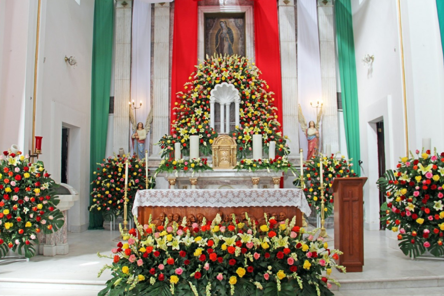
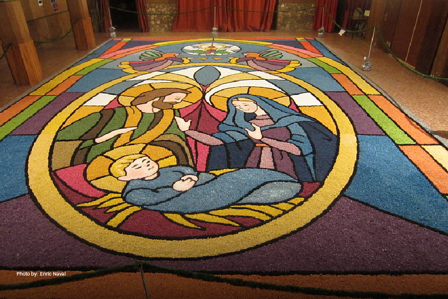

Esta danza folclórica data la conquista española. Es una representación que mezcla rituales y tradiciones de origen mesoamericano con parte de la cultura de España. En este baile una persona se pone un armazón (una especie de máscara gigante) con forma de toro. Los demás participantes de esta danza se ubican en forma de círculo y quien tiene la máscara baila en medio de ellos como si los estuviera persiguiendo. Al compás de la música, el torito imita a dicho animal y hace diferentes piruetas. Este baile se puede apreciar algunos eventos que tienen lugar en la ciudad o en los grandes parques de San Salvador en actos festivos.

Decorar los jardines el Día de la Cruz
Cada tres de mayo, es una de las tradiciones de San Salvador decorar una cruz puesta en el jardín con flores, frutas frescas y coloridos papeles. Alrededor de la cruz, las personas se reúnen a orar o simplemente se persignan. Esta celebración es para anunciar el inicio de la época lluviosa y, con ella, el período de cultivos, los cuales son considerados un obsequio de la tierra. Es una festividad de carácter religioso y espiritual y es justamente su peculiaridad lo que llama la atención de muchos extranjeros. Varias parroquias y centros educativos también adoptan esta tradición y la festejan preparando diferentes actividades durante esa fecha. Si querés ser parte de ellas, podés pedir un viaje a través de la app de Uber y vivir esta experiencia moviéndote tranquilamente por la ciudad.

Las alfombras de Semana Santa
Una de las costumbres más especiales de San Salvador consiste en crear alfombras durante la Semana Santa. Muchas familias en San Salvador tienen la tradición de trabajar juntos con esmero para crear las asombrosas alfombras de aserrín, sal y muchos colores en las calles donde desfilan las procesiones. En estas temporales obras de arte, se aprecian desde paisajes campestres hasta imágenes de índole religiosa. Su explosión de color y belleza la convierte en una de las tradiciones de San Salvador más esperadas. Para admirar una de estas alfombras, podés acercarte al Centro Histórico durante la Semana Santa.

Tomar atol en las tardes
El atol es una bebida prehispánica consumida también en otros países. Sin embargo, algo típico de la cultura salvadoreña es tomarla por la tarde, momento en el que se descansa luego de haber cumplido con la rutina del día. Puede ser preparada con distintos ingredientes los que le otorgan variados sabores. Los más usados son maíz negro, elote cocido o piñuela. Es una bebida caliente y es un antojito irresistible. Una forma clásica de servirlo es dentro de una especie de cuenco hecho del fruto de un árbol lo que le da un especial encanto. Para degustarla podés ir a los sitios donde sirven comidas y bebidas típicas dentro de la ciudad. ¡Animate y descubrí tu sabor preferido!